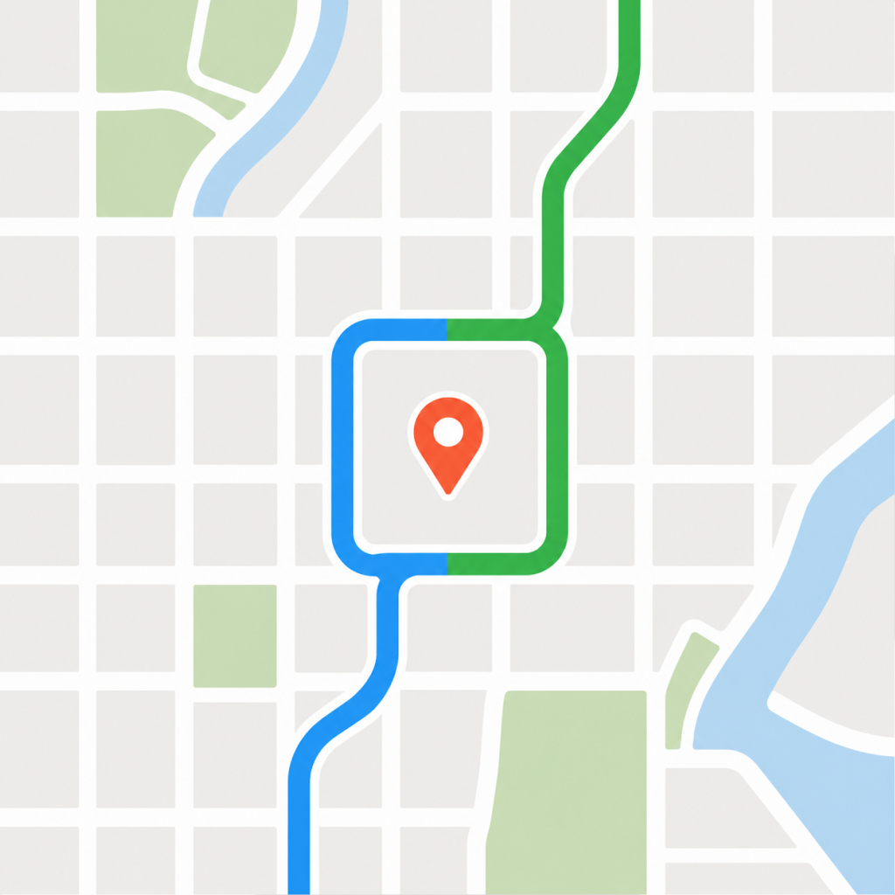

Drivers Against Flock — Duo · Areas & alerts
Drivers subscribe to areas the same way moderators do — a city, county or ZIP, a radius around them, or a shape drawn on the map — then see recent ALPR node changes there and choose how they're alerted. No account: areas are tied to the phone.
Duo · outer display 466 × 678 · Entry, empty state & adding an area
24 · Drawer — My areas entry
Ghost
Level 4 · 480 XP to Phantom
82
Development
2.9.0
25 · My areas — empty state
Keep an eye on the places you drive
Pick a city, a ZIP, or a shape on the map. We'll tell you when a camera shows up there — or comes down.
Add an area
Search a city, county or ZIP
Oakland, Alameda County, 94601…
Around your location
A radius you choose, 1–25 mi
Draw on the map
Your neighborhood, your commute, your call
No account needed. Your areas live on this phone — we never learn who's watching where.
26 · Add area — search a city, county or ZIP
Counts are cameras currently mapped in OpenStreetMap. Tap a result to start watching it.
26b · Add area — around your location
5 mi
{{ camerasInRadius }} cameras mapped inside this circle
We save the circle's center, not your live location. It won't follow you.
Watch this area
26c · Add area — draw on the map
Tap to add corners · drag to move
5 corners · 3.8 sq mi
3 cameras mapped inside
Closed shape
Watch this area
Duo · outer display 466 × 678 · Watching, changes & alerts
27 · My areas — three subscriptions
3 areas · 5 changes this week
Oakland, CA
City
Alameda County · 116 cameras mapped
+4 added−1 removed
Around home
5 mi
Centered on Grand Lake · 23 cameras mapped
Fruitvale
Drawn
3.8 sq mi · 3 cameras mapped
Quiet week. Zero new boxes.
Saved on this phone only. Delete the app and they're gone — there's nothing on our side to delete.
28 · Area feed — recent changes in Oakland
Oakland, CA
City · 116 cameras mapped
Today
{{ f.street }}
{{ f.verb }} · {{ f.operator }}
{{ f.time }}
Earlier this week
{{ f.street }}
{{ f.verb }} · {{ f.operator }}
{{ f.time }}
Show all 5 on the map
28b · Area on the map — all 5 changes
+
+
+
+
−
4 added1 removed
Tap a camera for details. Faded ones were taken down.
29 · Change detail — a camera added
New
ALPR
Flock Safety
Where
International Blvd & 35th Ave, southbound side
Direction
200° · facing SSW
Private routes already avoid this one.
Show on the map
OpenStreetMap ↗
30 · Alert settings — per area
Alerts
Oakland, CA · City
Tell me when
How often
Digest time
Applies to daily and weekly
8:00 AM
Pushes go to this phone through an anonymous device token. No account, no email, nothing tied to you.
Stop watching Oakland
31 · Lock screen — instant alert and a weekly digest
New camera in Oakland
2m ago
An ALPR reader was added at International Blvd & 35th Ave. Tap to see it on the map.
Your week around home
8:00 AM
1 camera added, 0 removed within 5 mi of home. Fruitvale stayed quiet.